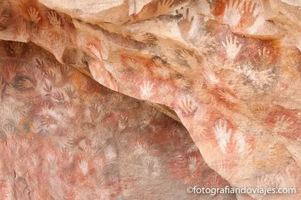

Cueva de las Manos
Santa Cruz, Argentina

Información Detallada
Ubicada en el alero del cañadón del Río Pinturas. Declarada Patrimonio Cultural de la Humanidad por la UNESCO en 1999.
Arte Rupestre Ancestral
Las impresiones de manos en negativo (con pigmentos de minerales locales como yeso, hematita y manganeso) datan de más de 9.300 años de antigüedad. También muestra escenas grupales de caza de guanacos (chaku).